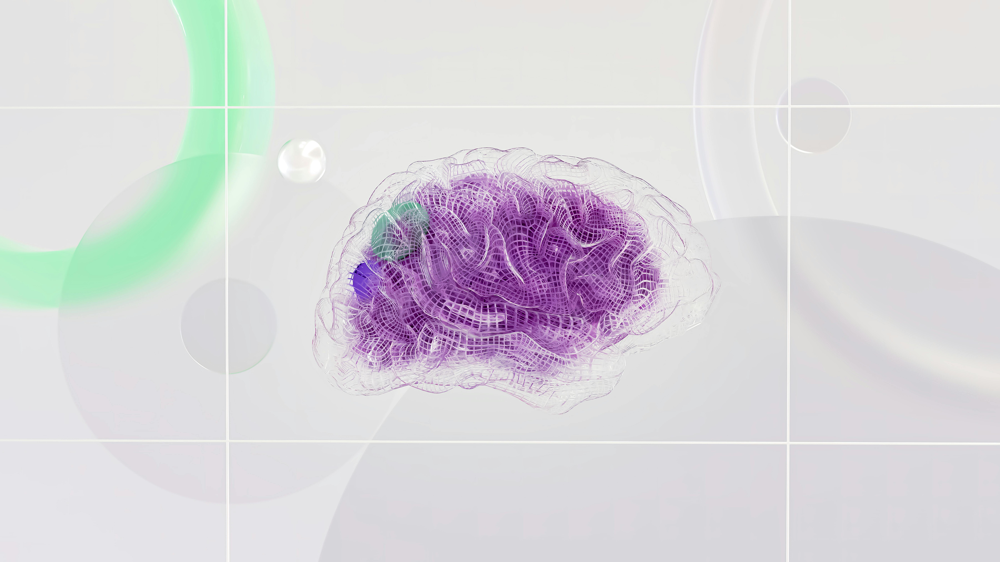

Introduction to Scalp Electroencephalography (sEEG)
In this tutorial, we will introduce core concepts essential in understanding sEEG. The aim of this tutorial is to provide practical information on sEEG for researchers new to this modality. Included is an overview of key concepts, learning exercises, and resources for further training in sEEG related research. Correct answers for the learning exercises are at the end of this tutorial.
Scalp electroencephalography (sEEG) is a non-invasive method used to record electrical activity of the brain over time with electrodes placed on the scalp.
Electrodes used in sEEG are positioned on the scalp according to standardized systems such as the 10-20 system, which ensures consistent and reliable coverage of the scalp. Once in place, the electrodes detect electrical activity generated by neurons in the brain. This activity, measured in microvolts (µV) over time, reflects the synchronized firing of large groups of neurons. The captured signals provide crucial insights into brain function, and the mechanisms through which neurons generate this electrical activity.
When many neurons fire in a synchronized manner, their electrical activity generates an extracellular field that can be detected by the electrodes. However, the electrical signals detected by the electrodes are very weak, typically in the microvolt range. To make these signals measurable, the EEG system amplifies them. A key consideration in this process is that everything electrical on the scalp is amplified, including non-brain signals known as artifacts.
The amplified signals are displayed as waveforms, which represent brain activity across different frequency bands, such as delta (0.5-4 Hz), theta (4-8 Hz), alpha (8-13 Hz), beta (13-30 Hz), and gamma (30-100 Hz). This waveform representation is a key method of visualizing EEG data. Additionally, by averaging EEG data that is time-locked to specific stimuli or events, researchers can extract event-related potentials (ERPs), which provide a more focused representation of brain responses to those stimuli.
Practice Question:
Question 1: A beginning researcher is designing a study to look at the real-time emotional response to images of nature. This researcher has decided to use sEEG for this project. What data representation approach will most likely be used in this study?
-
A) Event-Related Potentials (ERPs) – capturing brainwave patterns over extended periods, not directly linked to specific events
- B) Event-Related Potentials (ERPs) – capturing time-locked brain responses to specific events or stimuli
- C) Waveforms - capturing time-locked brain responses to specific events or stimuli
Key sEEG Terms
| Term | Definition |
|---|---|
| Action-potentials | brief local current with a temporary change in the electrical charge in the axon |
| Post-synaptic potentials (PSPs) | are electrical charges in a neuron that last longer than action potentials and are stronger in their effect. *This source contributes the most to the electrical activity within neurons. |
| Chronic depolarization: | occurs when the neuron’s electrical charge stays more positive than normal for a long time. Normally, a neuron’s resting state is more negative inside compared to the outside. However, when it’s chronically depolarized, this balance is disturbed, making the inside of the neuron more positive over an extended period. |
| Montage: | the specific way electrodes are arranged and connected to record EEG data. Different montages can show different views of brain activity. |
| Frequency | the number of cycles a brainwave completes in one second, measured in Hertz (Hz). It helps classify different types of brainwaves. |
| Amplitude | the measure of the electrical signal’s strength, recorded in microvolts (uV). Higher amplitude indicates stronger or more synchronized brain activity. |
| Event-Related Potential (ERP): | A brain response directly related to a specific event, like a sound or a visual stimuli. It’s measured by averaging EEG signals that occur after the event. |
| Power Spectral Density (PSD) | A measure that shows how power (or energy) is distributed across different frequencies in the EEG signal. It helps identify dominant brainwave frequencies. |
| Gamma | A type of brainwave associated with high-level cognitive functions like problem-solving, concentration, and processing information. They have a frequency of 30-100 Hz. |
| Beta | A type of brainwave associated with active thinking, focus, and alertness. They have a frequency of 13-30 Hz. |
| Alpha | A type of brainwave that occurs when you are awake but relaxed, usually with your eyes closed. They have a frequency of 8-13 Hz. |
| Theta | A type of brainwave linked to creativity, intuition, and deep relaxation. They have a frequency of 4-8 Hz. |
| Delta | A type of brainwave that occurs during deep, restorative sleep and is involved in healing processes. They have a frequency of 0.5-4 Hz. |
Considerations when considering to use an EEG system
EEG systems, such as sEEG, offer advantages including: real-time recording, millisecond resolution, direct measurement of neural activity, and are generally less expensive than other brain imaging modalities such as MRI and PET. Subsequently, EEG is particularly suitable for investigating time-dependent phenomena, such as brief emotional states or fast neural processes.
Practice Question:
Question 2: Imagine you are designing a study to investigate how the brain responds to sudden, unexpected sounds. You have access to various brain imaging techniques, including scalp EEG. Given the nature of your study, why might you choose scalp EEG over other techniques like fMRI or PET?
- A) Because sEEG provides the best spatial resolution, allowing you to pinpoint the exact brain region involved.
- B) Because sEEG is non-invasive and can measure brain activity with high temporal resolution, capturing the brain's response to sounds in real-time.
- C) Because sEEG is less affected by external noise, making it ideal for detecting subtle brain signals.
- D) Because sEEG can directly visualize the structural changes in the brain caused by the sounds.
Scalp EEG is a non-invasive method that is easier to perform, suitable for continuous monitoring, and poses lower risk to participants. It is best suited for assessing widespread brain activity rather than focusing on precise or deep brain regions. On the other hand, intracranial EEG is an invasive technique that requires the surgical implantation of electrodes. This approach allows for precise localization, making it ideal for investigating specific areas of brain activity and providing detailed insights into deep brain regions.
Practice Question:
Question 3: Which of the following best describes when scalp EEG is preferred over intracranial EEG?
- A) When precise localization of deep brain activity is required.
- B) For non-invasive monitoring of widespread brain activity.
- C) To investigate specific areas of brain activity with high accuracy.
- D) When surgical implantation of electrodes is necessary.
Considerations when working with sEEG data
Artifacts in scalp EEG are unwanted electrical signals that originate from sources other than brain activity. These signals can interfere with the interpretation of EEG data and may obscure the underlying neural activity that we are interested in analyzing.
Artifacts can arise from noise and movement of eyes, electrodes, or cables. To prevent this we can ensure secure contact between electrodes and the scalp, guide the participant to be stationary, and reducing environmental noise by using filters and keeping electronic devices away from the EEG system.
For detection of artifacts, raw EEG data can be reviewed for spikes or any unusual patterns and there are software tools that can automatically detect and mark artifacts based on characteristic signatures.
To correct for the presence of artifacts, one can manually remove the affected sedgment, apply filters to reduce specific types of noise, and even software tools to help identify and correct artifacts.
Artifacts can significantly affect the quality of EEG data and lead to incorrect interpretations. By properly handling artifacts, researchers can ensure that the data they analyze more accurately reflects true brain activity, leading to more reliable and valid conclusions in their research.
Practice Question:
Question 4: A beginning researcher is analyzing EEG data and notices periodic fluctuations in the signal that correspond with the participant blinking. What should the researcher do to address this issue in the analysis?
- A) Interpret the fluctuations as brain activity related to visual processing.
- B) Discard the entire EEG recording as it is likely corrupted.
- C) Identify and remove these artifacts from the data to focus on true neural activity.
- D) Adjust the electrode placement and redo the experiment to avoid further artifacts.
Practice Question:
Question 5: A researcher is comparing raw EEG data with processed EEG data from the same recording session. What is the most likely difference they will observe between the two?
- A) The raw EEG data will show clear, uninterrupted brainwave patterns, while the processed data will be noisy and difficult to interpret.
- B) The raw EEG data may include various artifacts and noise, while the processed EEG data will have these elements reduced or removed for clearer interpretation.
- C) The processed EEG data will show higher amplitude signals than the raw data because it has been amplified.
- D) The raw EEG data will display Event-Related Potentials (ERPs) more clearly than the processed data, which might obscure these signals.
Correct answers:
B, 2. B, 3. B, 4. C, 5. B
Resources for further learning
Introduction to ERP course instructed online by Steven Luck and Emily Kapperman. It is estimated to take 3-5 hours to complete and is of no cost.
Summer workshop on ERPs instructed instructed by the same instructors above. This workshop is held in person at UC Los Angeles or San Diego State University, where the location changes depending on the year. This course is 10 days long.
References
- Marcuse, L.V. & Fields, M.C. & Yoo, J.J. (2015). Rowan's Primer of EEG: Second edition.
- Libenson, M.H. (2022). Practical Approach to Electroencephalography: Second edition.